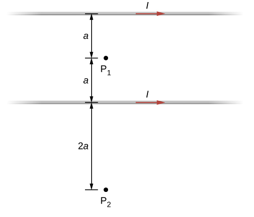
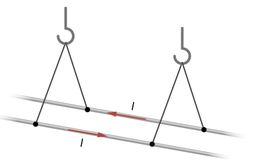
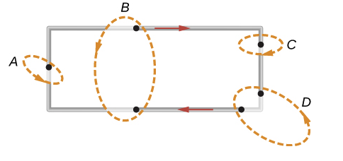
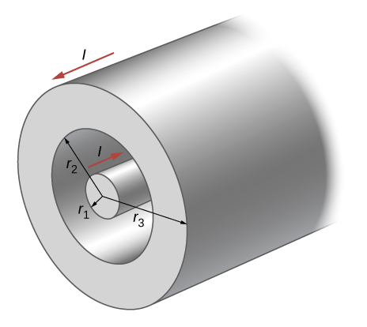

B5.5 Problems#
Problem B5.1
A typical current in a lightning bolt is \(10^4\) A. Estimate the magnetic field 1 m from the bolt.
This problem is a slightly modified version from OpenStax. Access for free here
# DIY Cell
Problem B5.2
The magnitude of the magnetic field \(50.0\) cm from a long, thin, straight wire is \(8.0~\mu\)T. What is the current through the long wire?
This problem is a slightly modified version from OpenStax. Access for free here
# DIY Cell
Problem B5.3
A transmission line strung \(7.0\) m above the ground carries a current of \(500.0\) A. What is the magnetic field on the ground directly below the wire? Compare your answer with the magnetic field of Earth.
This problem is a slightly modified version from OpenStax. Access for free here
# DIY Cell
Problem B5.4
The accompanying figure shows two long, straight, horizontal wires that are parallel and a distance \(2a\) apart. If both wires carry current \(I\) in the same direction,
what is the magnetic field at P1?
what is the magnetic field at P2?

This problem is a slightly modified version from OpenStax. Access for free here
# DIY Cell
Problem B5.5
Two long, straight wires are parallel and \(10.0\) cm apart. One carries a current of \(2.0\) A, the other a current of \(5.0\) A.
If the two currents flow in opposite directions, what is the magnitude and direction of the force per unit length of one wire on the other?
What is the magnitude and direction of the force per unit length if the currents flow in the same direction?
This problem is a slightly modified version from OpenStax. Access for free here
# DIY Cell
Problem B5.6
Two long, parallel wires are hung by cords of length \(5.0\) cm, as shown in the accompanying figure. Each wire has a mass per unit length of \(30.0\) g/m, and they carry the same current in opposite directions. What is the current if the cords hang at \(6.0^\circ\) with respect to the vertical?

This problem is a slightly modified version from OpenStax. Access for free here
# DIY Cell
Problem B5.7
When the current through a circular loop is \(6.0\) A, the magnetic field at its center is \(2.0\times 10^{−4}\) T. What is the radius of the loop?
This problem is a slightly modified version from OpenStax. Access for free here
# DIY Cell
Problem B5.8
A flat, circular loop has \(20\) turns. The radius of the loop is \(10.0\) cm and the current through the wire is \(0.50\) A. Determine the magnitude of the magnetic field at the center of the loop.
This problem is a slightly modified version from OpenStax. Access for free here
# DIY Cell
Problem B5.9
A current \(I\) flows around the rectangular loop shown in the accompanying figure. Evaluate \(\oint\vec{B}\cdot d\vec{l}\) for the paths A, B, C, and D.

This problem is a slightly modified version from OpenStax. Access for free here
# DIY Cell
Problem B5.10
A portion of a long, cylindrical coaxial cable is shown in the accompanying figure. A current \(I\) flows down the center conductor, and this current is returned in the outer conductor. Determine the magnetic field in the regions
\(r \le r_1\)
\(r_2 \ge r \ge r_1\)
\(r_3 \ge r \ge r_2\)
\(r_3 \le r \)
Assume that the current is distributed uniformly over the cross sections of the two parts of the cable.

This problem is a slightly modified version from OpenStax. Access for free here
# DIY Cell